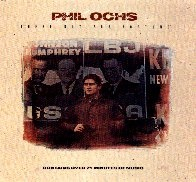

There But for Fortune
Releases
Date Label Number Country Format Comments
---- ----- ------ ------- ------ --------
1989 Elektra 60832 USA CD
1989 Elektra ????? USA LP Double album, extra tracks
- What's That I Hear? (2:00)
- One More Parade (3:00)
- Too Many Martyrs (2:46)
- The Bells.
Not on the CD.
- Bound For Glory.
Not on the CD.
- The Power And The Glory (2:15)
- I Ain't Marchin' Anymore (2:32)
- Draft Dodger Rag (2:07)
- In the Heat of The Summer
Not on the CD.
- The Highwayman (5:36)
- Here's
to the State of Mississippi (5:52)
- There But for
Fortune (2:35)
- I'm Going to Say it Now (2:46)
- Is There Anybody Here (3:17)
- Cops of the World (4:45)
- Ringing of Revolution (3:17)
- Bracero (3:57)
- The Marines Have Landed on the Shores of Santo Domingo
- Love Me, I'm a Liberal (3:46)
- Changes (4:30)
- When I'm Gone (3:51)
Liner Notes
...
By Lenny Kaye
NOTE:
The running times above are incorrect on some songs.
The live songs do not include the spoken intros as part of the running time.
Back to the Phil Ochs web page
Last modified 18 Oct 98 by trent